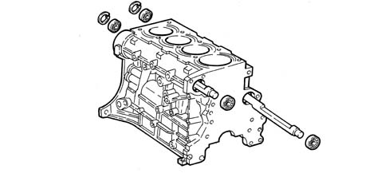
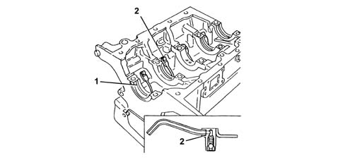
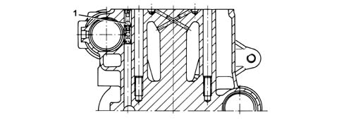
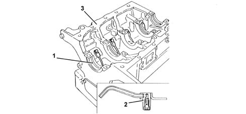
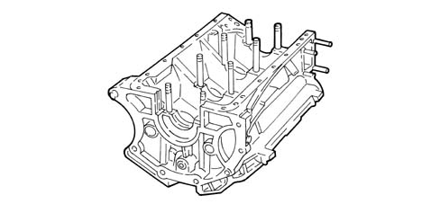

1012A CRANK CASE AND COMPONENTS
- Path
- Descriptions > 10 ENGINE UNIT > 1012 ENGINE CRANKCASE > 1012A CRANK CASE AND COMPONENTS
- Kind
- system description
- Applies to
- engines: 1.8 T.SPARK, 2.0 JTS, 3.2 V6; all production periods
- Interactive page
- https://sloeber94.github.io/elrnDB-aGt/en/#/125000248
Applies to: engines: 2.0 JTS; all production periods
CONSTRUCTION FEATURES
The engine block is cast iron, with high mechanical strength.
The crankshaft is supported by means of five main bearings (1).
The cylinders are formed directly in the engine block, and are graded into three sizes plus one oversize.
The engine block also houses the two counter-rotating shafts, which are supported by a central bush and a ball bearing at the front and rear.

There are special channels in the engine block walls which allow the flow of coolant and lubricating oil.
At the bottom of each cylinder, there is a jet (2) from which oil is sprayed onto the piston crown.

A cut-off valve (1) fitted inside the vertical channel carrying oil to the cylinder head prevents the system emptying when the engine is off.

Applies to: engines: 1.8 T.SPARK; all production periods
CONSTRUCTION FEATURES
.

1 - Bearing supports
2 - Jets
3 - Cylinder block/crankcase
Applies to: engines: 3.2 V6; all production periods
CONSTRUCTION FEATURES
The light aluminium and silicon alloy cylinder block/crankcase has good mechanical resistance and thermal conductivity properties.
The crankshaft is supported by means of four main bearings.
There are special channels in the engine block walls which allow the flow of coolant and lubricating oil.
